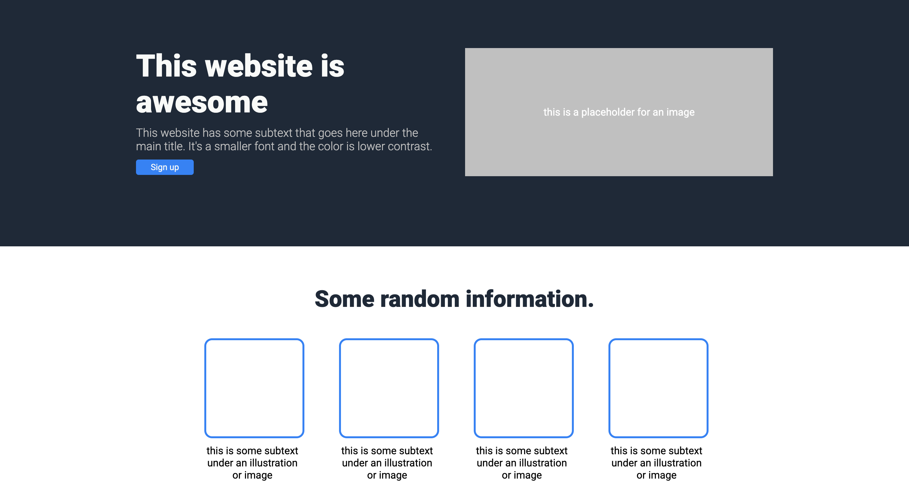
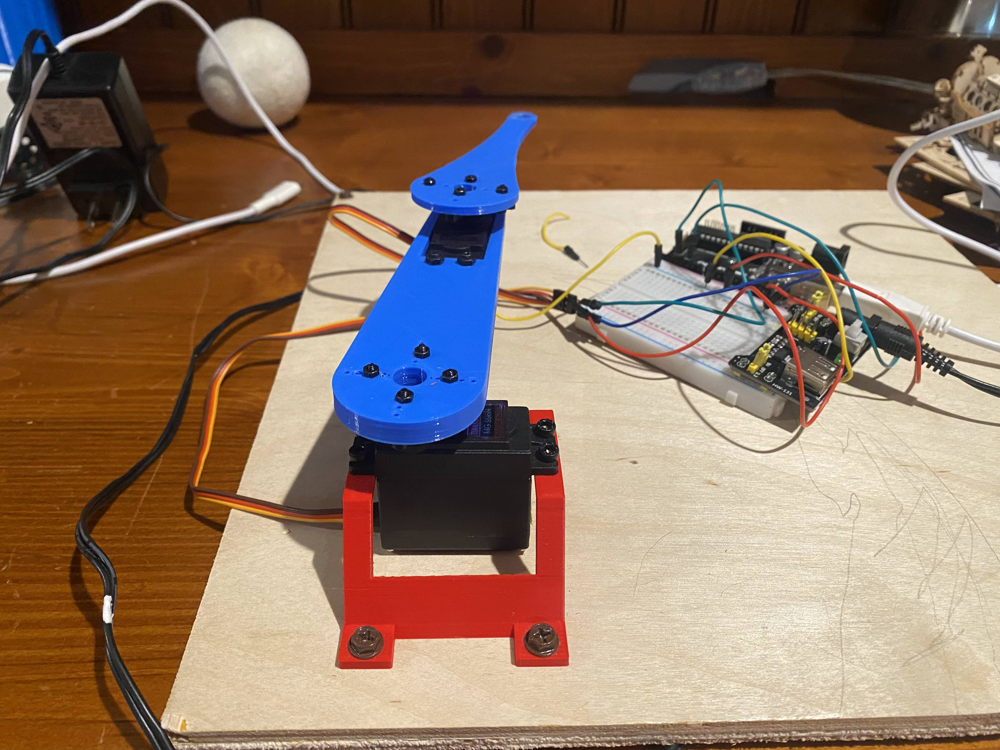
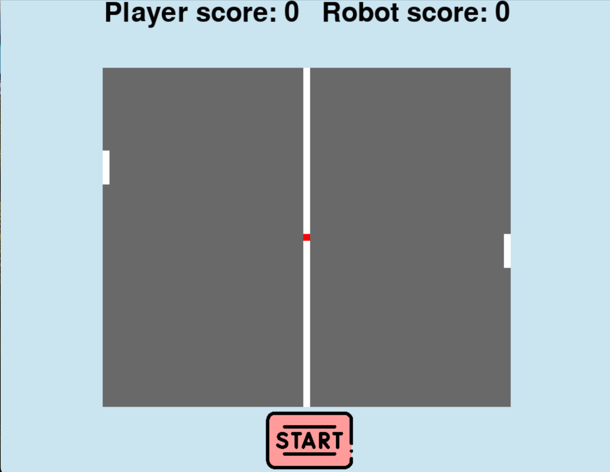

This requires some background. I am NOT a software inclined person, nor have I ever been.
I was always fascinated by the other side of engineering but never understood it. And it is
daunting. All of the code I have learned has been to elevate my other skills. It has expanded
the projects I am able to do, elevated my communication with peers, and made me a more efficient engineer.
And while this all sounds amazing, by all means, my code is rudamentary.
I started coding really with scratch in school. However, that lacks much industry application
nowadays. So really I began my coding journey with web development. I learned html, css, and js
from a, open source code learning website called The Odin Project. It taught me beginner skills,
just enough to satisfy my urge to know how the websites I browsed were made. The skills I learned
prove helpful, especially in making this portfolio.


After I deemed myself proficient enough in web development I began to learn python.
I did all the basic challenges, learned beginner algorithms, and learned necessary libraries then
moved on to discover the real fun of python. I began learning supplementary libraries like
selenium, streamlit, and pygame, to name a few. In the future I hope to expand my knowledge
of more libraries as they provide some awesome functionality to python. Eventually I will learn
machine learning skills, excel sheet manipulation, and more.


This is my first real coding challenge. My goal was to have a website with a box on it and wherever
I moved my mouse on the box, the arm in real life would follow. From this I learned
flask, inverse kinematics, arduino, rasberry pi (a mistake), and many algorithms. I learned alot
from this project and had an awesome time doing it.
This is the last project I worked on before I had to move out to college.
Its a pong game made with pygame, the motivation for this creation was essentially,
to see if I could. Turns out, it was pretty simple. One flaw is, the robot is unbeatable.
